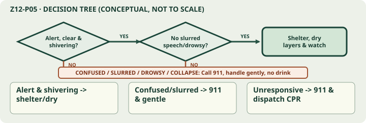

Z12-P05 · Extreme environments · Adapted historical material
Recognize early hypothermia behavioral changes before shivering stops
Spot neurologic decline early in cold wet exposure and escalate immediately without relying on shivering alone.
When it applies · Any cold, wet or windy exposure—including cool rain well above freezing (40°F–50°F).
Equipment · Wind/ground shelter, dry insulation wrap and emergency communication device.

Actions
- Watch for the behavioral red flags ("umbles"): fumbling hands, stumbling gait, mumbled or slurred speech, confusion, apathy or unusual drowsiness—mental status matters far more than guessed temperature.[E06, T03]
- Recognize that when shivering STOPS in a still-cold, confused or drowsy person, hypothermia is WORSENING dangerously—never mistake absent shivering for recovery.[T03, E06]
- Move an alert mildly chilled person out of wind onto dry ground insulation with dry layers and monitor closely; for ANY confusion, slurred speech, severe drowsiness or unresponsiveness, call 911 immediately, handle gently, protect core heat and give NO oral food or drink to impaired patients.[T03, T02, E05]
Failure recognition · Telling a stumbling, slurring companion to "walk faster to warm up" or pouring hot liquid into a drowsy hypothermic patient.[T03, E06]
Verify · Check every group member's speech clarity, hand coordination and alertness during cold stops, confirming clear escalation criteria.[T03, E06, E11, ED]
Stop or change course · Confusion, slurred speech, failure to stay awake, collapse or abnormal breathing requires immediate 911 activation, gentle horizontal handling and dispatcher-guided care.[T02, T03, T01]
Evidence and editorial notes
- E05 · NWS · What To Do If You're Caught in a Winter Storm (current web edition)
- Section: Outside and find shelter · Conditions: Cold, wet or windy winter conditions
Support: Block wind, stay dry and keep off cold ground. Keep exposure reduction separate from making a fire.
Limitations: Improvised windbreaks do not provide rated thermal protection or snow-load capacity. · Conflicting evidence: None; aligns with CDC-H.
Editorial note: Separates wind, ground, and moisture heat-loss pathways. · Specialist reviewer: Cold-weather shelter specialist
Primary source · checked 2026-11-24 - E06 · CDC · Preventing Hypothermia (current web edition)
- Section: Recognizing and treating hypothermia · Conditions: Cold wet exposure; signs such as confusion, slurred speech, fumbling or drowsiness
Support: Suspected hypothermia warrants prompt help and protection from further cooling. It can occur above freezing if wet or chilled.
Limitations: Early mild shivering can mask rapidly worsening judgment impairment. · Conflicting evidence: None; aligns with ARC and WMS guidance.
Editorial note: Anchors exposure-to-medical escalation thresholds. · Specialist reviewer: Wilderness medicine
Primary source · checked 2026-11-24 - E11 · NPS · Hike Smart (current web edition)
- Section: Plan your hike; Stay together · Conditions: Groups on hiking routes
Support: Choose a route suited to the group's abilities and hike at a pace that keeps the group together.
Limitations: Fast hikers moving ahead at junctions is a leading driver of preventable separation. · Conflicting evidence: None; aligns with SAR prevention principles.
Editorial note: Core reference for group accountability and pacing cards. · Specialist reviewer: Group leaders and search and rescue
Primary source · checked 2026-11-24 - T01 · American Red Cross · First Aid Steps (current web edition)
- Section: First Aid Steps > Check the scene; check the person · Conditions: Lay responder in United States; assess safety before contact
Support: Check scene safety, responsiveness, breathing and immediately life-threatening conditions.
Limitations: Lay guidance does not replace advanced clinical or rescue protocols. · Conflicting evidence: None; universal first-response opening gate.
Editorial note: Anchors scene-safety-first rule across Z01. · Specialist reviewer: EMS and wilderness medicine
Primary source · checked 2026-11-24 - T02 · American Red Cross · First Aid Steps (current web edition)
- Section: First Aid Steps > Call 9-1-1 · Conditions: Lay emergency response to unresponsiveness, abnormal breathing or severe bleeding
Support: Activate EMS and get needed equipment. Follow dispatcher directions and act within training.
Limitations: Remote locations may delay EMS arrival, requiring sustained stabilization after activation. · Conflicting evidence: None; aligns with NPS-E.
Editorial note: Mandates early emergency activation and dispatcher adherence. · Specialist reviewer: EMS and wilderness medicine
Primary source · checked 2026-11-24 - T03 · CDC · Preventing Hypothermia (current web edition)
- Section: Warning signs; What to do · Conditions: Cold exposure and suspected hypothermia
Support: Confusion, slurred speech and drowsiness are warning signs. Obtain medical attention and protect from further cold.
Limitations: Shivering may stop as hypothermia worsens; absence of shivering is not reassurance. · Conflicting evidence: None; aligns with WMS cold guidelines.
Editorial note: Core neurological red-flag trigger for stopping activity and calling rescue. · Specialist reviewer: Wilderness medicine
Primary source · checked 2026-11-24
Source lineage · B012-P07/P24 hypothermia and CDC/ARC guidance; adapted historical material · Classification · Adapted historical material.